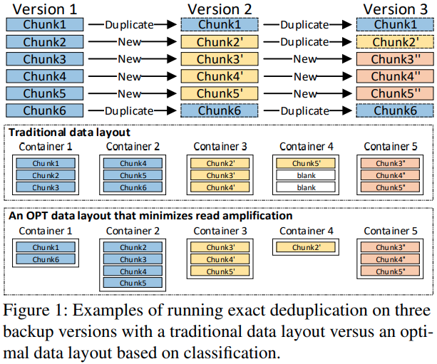

| Venue | Category |
|---|---|
| FAST'21 | Deduplication System Design |
The Dilemma between Deduplication and Locality: Can Both be Achieved?1. SummaryMotivation of this paperMFDedupImplementation and Evaluation2. Strength (Contributions of the paper)3. Weakness (Limitations of the paper)4. Some Insights (Future work)
Motivation
restore and GC issues in deduplication system
most duplicate chunks in a backup are directly from its previous backup.
GC issues
includes two stages:
The main difference between previous deduplication system
previous deduplication system: write-friendly, mainly focus on write path, rarely manages the location and placement of chunks
this deduplication system: management-friendly, use offline method to iteratively redesign the data layout of deduplicated chunks to improve chunk locality.
Main observation
Fragmentation is dependent on the backup version and associated with chunks' reference relationship.
can use this to reduce the fragmentation issue (classification-based data layout)

Main challenges
The space of classification is very large, may generate more small containers
OPT data layout solves the read amplification problem but requires more seek operations for these very small containers, which causes poor data locality.
Derivation relationship of backups
In backup system, the duplicate chunks of each backup are not randomly distributed but are derived from the chunks of the last backup
can greatly decrease the number of categories needed for the OPT data layout.
Neighbor-Duplicates-Focus indexing (NDF)
only removes duplicates between neighboring backup version.
need to build a local fingerprint index
Across-Version-Aware reorganization (AVAR)
Deduplicating stage: store unique chunks of the latest new backup version into a new active category.
Arranging stage: analyze the reference relationship between chunks and backup versions.
Each category has two states:
Active: can be further arranged after future backups.
Archived: immutable.
Grouping: store the new archived categories into a Volume by the order of their name
Restore
need to read the required categories on the OPT data layout, which is referenced by the to-be-restored version.
Deletion and GC
Implementation:
based on Destor, open-sourced
SHA-1 as the fingerprint
FastCDC: as the chunking method
Compared with:
Evaluation
Trace: sina, source code of Chromium project, ubuntu VM, SYN
SSD user space + HDD store space
Actual deduplication ratio
Backup throughput
Restore throughput
Arranging vs. Traditional GC
Size distribution of volumes/categories
the size of volumes: 90MB - 1.3GB
can estimate how much more can be written to the deduplication system
capping-FAST'13 HAR -FAST'14
For backup storage, it remains one of the most significant use cases.
change the container from fixed-sized containers to variable-sized containers
VM backups: 100GB
the majority of backups are 50-500GB in Data Domain.